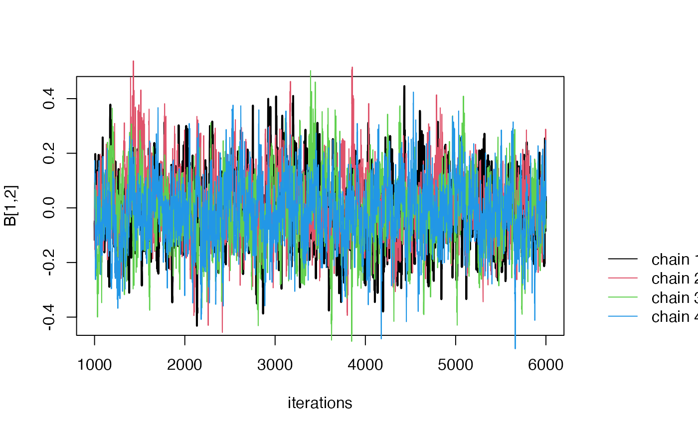

FLOW-MR-tutorial
FLOW-MR-tutorial.RmdIntroduction
FLOW-MR is an R package for performing Mendelian Randomization under the mediation setting. This tutorial demonstrates how to use the package step by step.
Installation
# Install devtools if not installed
install.packages("devtools")
#> Installing package into '/private/var/folders/1p/kyg0zmtx4gdg27q_5x4d78fc0000gn/T/RtmpMnRMVQ/temp_libpath4da03610fba6'
#> (as 'lib' is unspecified)
#>
#> The downloaded binary packages are in
#> /var/folders/1p/kyg0zmtx4gdg27q_5x4d78fc0000gn/T//Rtmp4E55Rr/downloaded_packages
# Install FLOW-MR
devtools::install_github("ZixuanWu1/FLOW-MR")
#> Downloading GitHub repo ZixuanWu1/FLOW-MR@HEAD
#> rlang (1.1.4 -> 1.1.5 ) [CRAN]
#> cli (3.6.3 -> 3.6.4 ) [CRAN]
#> pillar (1.9.0 -> 1.10.1 ) [CRAN]
#> R6 (2.5.1 -> 2.6.1 ) [CRAN]
#> Rcpp (1.0.13 -> 1.0.14 ) [CRAN]
#> withr (3.0.1 -> 3.0.2 ) [CRAN]
#> gtable (0.3.5 -> 0.3.6 ) [CRAN]
#> RcppArmad... (14.0.2-1 -> 14.2.3-1) [CRAN]
#> Installing 8 packages: rlang, cli, pillar, R6, Rcpp, withr, gtable, RcppArmadillo
#> Installing packages into '/private/var/folders/1p/kyg0zmtx4gdg27q_5x4d78fc0000gn/T/RtmpMnRMVQ/temp_libpath4da03610fba6'
#> (as 'lib' is unspecified)
#>
#> The downloaded binary packages are in
#> /var/folders/1p/kyg0zmtx4gdg27q_5x4d78fc0000gn/T//Rtmp4E55Rr/downloaded_packages
#> ── R CMD build ─────────────────────────────────────────────────────────────────
#> * checking for file ‘/private/var/folders/1p/kyg0zmtx4gdg27q_5x4d78fc0000gn/T/Rtmp4E55Rr/remotes52aa58892cdb/ZixuanWu1-FLOW-MR-2d061a7/DESCRIPTION’ ... OK
#> * preparing ‘FLOWMR’:
#> * checking DESCRIPTION meta-information ... OK
#> * cleaning src
#> Warning: bad markup (extra space?) at BayesMediation.Rd:48:21
#> Warning: bad markup (extra space?) at BayesMediation.Rd:49:22
#> Warning: bad markup (extra space?) at BayesMediation.Rd:50:26
#> Warning: bad markup (extra space?) at BayesMediation.Rd:52:27
#> Warning: bad markup (extra space?) at BayesMediation.Rd:54:29
#> Warning: bad markup (extra space?) at BayesMediation.Rd:56:30
#> Warning: bad markup (extra space?) at BayesMediation.Rd:58:17
#> Warning: bad markup (extra space?) at BayesMediation.Rd:59:18
#> Warning: bad markup (extra space?) at gibbs_wrapper.Rd:64:9
#> Warning: bad markup (extra space?) at gibbs_wrapper.Rd:65:9
#> Warning: bad markup (extra space?) at gibbs_wrapper.Rd:66:14
#> Warning: bad markup (extra space?) at gibbs_wrapper.Rd:67:14
#> Warning: bad markup (extra space?) at gibbs_wrapper.Rd:68:10
#> Warning: bad markup (extra space?) at gibbs_wrapper.Rd:69:13
#> Warning: bad markup (extra space?) at summary_gibbs.Rd:24:12
#> Warning: bad markup (extra space?) at summary_gibbs.Rd:25:16
#> Warning: bad markup (extra space?) at summary_gibbs.Rd:26:10
#> Warning: bad markup (extra space?) at summary_gibbs.Rd:27:13
#> Warning: bad markup (extra space?) at summary_gibbs.Rd:28:12
#> Warning: bad markup (extra space?) at summary_gibbs.Rd:29:14
#> Warning: bad markup (extra space?) at summary_gibbs.Rd:30:11
#> Warning: bad markup (extra space?) at summary_gibbs.Rd:31:13
#> Warning: bad markup (extra space?) at zero.centered.em.Rd:42:10
#> Warning: bad markup (extra space?) at zero.centered.em.Rd:43:10
#> Warning: bad markup (extra space?) at zero.centered.em.Rd:44:10
#> * installing the package to process help pages
#> * saving partial Rd database
#> * cleaning src
#> * checking for LF line-endings in source and make files and shell scripts
#> * checking for empty or unneeded directories
#> * building ‘FLOWMR_1.0.tar.gz’
#> Installing package into '/private/var/folders/1p/kyg0zmtx4gdg27q_5x4d78fc0000gn/T/RtmpMnRMVQ/temp_libpath4da03610fba6'
#> (as 'lib' is unspecified)Example Usage
Step 1: Prepare Input Data
Here we use GRAPPLE read the preprocess the input data. One can downlaod the GRAPPLE package using the following command.
devtools::install_github("jingshuw/grapple")
#> Skipping install of 'GRAPPLE' from a github remote, the SHA1 (317e8373) has not changed since last install.
#> Use `force = TRUE` to force installationThen we can use GPAPPLE to pre-process Data. We follow a three-sample MR design here. The sel.file will be used to select genome-wide significant SNPs. The exp.file contains exposures of interests. The out.file contains the outcome of interests. For more details, see https://github.com/jingshuw/GRAPPLE.
In this example we use adult BMI from GIANT and childhoood BMI from egg as selections files. We use chilldhood body size and bmi adult from UK biobank as exposures, and Breast Cancer from Micha as outcome.
library(GRAPPLE)
# Selection file of snps
sel.file <- c("~/Downloads/research/BMI-giant17eu.csv", "~/Downloads/research/bmi_child_agg.csv" )
# Exposure file
exp.file <- c( "~/Downloads/research/childhood_body_size.csv","~/Downloads/research/BMI_adult.csv" )
# Outcome file
out.file <- "~/Downloads/research/Breast-Micha17erp.csv"
# Use plink to select independent significant SNPs
plink_refdat <- "~/Downloads/research/data_maf0.01_rs_ref/data_maf0.01_rs_ref"
## Use max.p.thres to decide the significance level of SNPs
## Use cal.cor = T to compute the noise correlation
data.list <- GRAPPLE::getInput(sel.file, exp.file, out.file, plink_refdat, max.p.thres =0.01,
plink_exe = "~/Downloads/research/plink_mac_20210606/plink", cal.cor = T)
#> [1] "Marker candidates will not be obtained as number of risk factors k > 1"
#> [1] "loading data for selection: ~/Downloads/research/BMI-giant17eu.csv ..."
#> [1] "loading data for selection: ~/Downloads/research/bmi_child_agg.csv ..."
#> [1] "loading data from exposure: ~/Downloads/research/childhood_body_size.csv ..."
#> [1] "loading data from exposure: ~/Downloads/research/BMI_adult.csv ..."
#> Warning in harmonise_cleanup_variables(res.tab): NAs introduced by coercion
#> [1] "loading data from outcome: ~/Downloads/research/Breast-Micha17erp.csv ..."
#> [1] "Start clumping using PLINK ..."
#> Loading required package: data.table
#>
#> Attaching package: 'data.table'
#> The following object is masked from 'package:magic':
#>
#> shift
#> [1] "813 independent genetic instruments extracted. Done!"Step 2: Run FLOW-MR
In order to run FLOW-MR, we need to prepare two input files Gamma_hat and Sd_hat, with the reversed time order
dat <-data.list$data;
# Run the mediation method
Gamma_hat =rbind(dat$gamma_out1,
dat$gamma_exp2,
dat$gamma_exp1)
Sd_hat = rbind(dat$se_out1,
dat$se_exp2,
dat$se_exp1)
result = BayesMediation(Gamma_hat, Sd_hat, cor = data.list$cor.mat)
#> [1] "2025-03-11 16:00:24 CDT"
#> [1] "2025-03-11 16:04:49 CDT"Step 3: Look at summary of direct effects
Here we print the results of direct effects. Here each row corresponds to a parameter.
print(result$summary)
#> mean var sd 2.5% 50%
#> B[1,2] -0.115401772 5.448561e-03 0.0738143712 -0.258989540 -0.116772516
#> B[1,3] -0.349770699 5.952166e-03 0.0771502819 -0.500633472 -0.349542650
#> B[2,3] 1.486012961 3.012862e-03 0.0548895398 1.379180578 1.485076322
#> sigma 0.628870999 2.492000e-02 0.1578606978 0.401412398 0.602327181
#> sigma1[1] 0.026220009 1.481295e-05 0.0038487602 0.020126852 0.025717490
#> sigma1[2] 0.017487449 1.948333e-05 0.0044139927 0.012229485 0.016493869
#> sigma1[3] 0.016801650 3.714487e-06 0.0019273004 0.013572255 0.016607753
#> sigma0[1] 0.004338455 4.794462e-07 0.0006924205 0.003051686 0.004335923
#> sigma0[2] 0.005943455 1.255415e-07 0.0003543183 0.005210316 0.005962192
#> sigma0[3] 0.003752879 3.762381e-08 0.0001939686 0.003359107 0.003755688
#> p[1] 0.082905498 6.439988e-04 0.0253771313 0.039889868 0.080771651
#> p[2] 0.039106441 6.894864e-04 0.0262580725 0.004218164 0.033979817
#> p[3] 0.097005043 5.063891e-04 0.0225030909 0.058734997 0.095202473
#> 97.5% ESS Rhat
#> B[1,2] 0.027441284 3061.5942 0.9999838
#> B[1,3] -0.200982185 3461.0723 1.0000514
#> B[2,3] 1.598052519 513.6869 1.0004185
#> sigma 1.013003886 11825.9652 1.0002782
#> sigma1[1] 0.035130218 1068.4865 1.0006927
#> sigma1[2] 0.028499099 969.3300 1.0021815
#> sigma1[3] 0.020997320 1747.6425 1.0005458
#> sigma0[1] 0.005677666 157.8393 1.0052341
#> sigma0[2] 0.006592855 570.3329 1.0030456
#> sigma0[3] 0.004127756 1181.4439 1.0010404
#> p[1] 0.137895782 605.1173 1.0011770
#> p[2] 0.101026303 309.4166 1.0067154
#> p[3] 0.145622044 1012.3245 1.0002989For instance B[1, 2] represents the effect of adult BMI on breast cancer, B[1, 3] represents the direct effect of childhood BMI on breast cancer, and B[2, 3] represents the direct effect of childhood BMI on Adult BMI. The ESS represents the effective sample size, and Rhat is the Gelman-Rubin statistics
In case of non-convergence (such as large Rhat), one can use the following command to see traceplot of posterior samples

Step 4
One can use the following command to get path-wise effect. For example here we look at the path childhood BMI -> Adult BMI -> Breast Cancer
path_effect = indirect_effect(result$raw, K = 3, path = c(3,2,1), warmup = 3000)
print(path_effect)
#> Mean 2.5% 50% 97.5%
#> 1 -0.1713112 -0.3853506 -0.1726248 0.04051449